Making urban UAV operations safer, quieter and more socially acceptable
The Avalanche explored the practical and social challenges of introducing drones into shared city airspace. Rather than designing and flight-testing a specific aircraft, the team developed a structured concept for U-space management and public acceptance: identifying risks, reviewing existing initiatives, proposing technologies, and considering real-world operational and financial constraints.
The research connects airspace safety and detection with noise-conscious propeller choices, environmental responsibility, privacy-sensitive operating rules and community feedback. It concludes with exploratory survey results and budget categories for implementation.
Team: Yahya Hazem, Eman Yasser and Asmaa Sapry · Institution: Zewail City University of Science and Technology, Egypt.
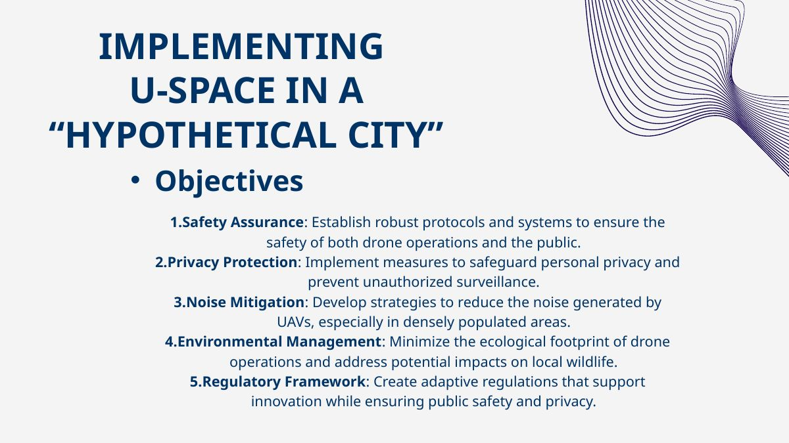
From the acceptance problem to a U-space operating concept
| Challenge | Proposed response | Engineering interpretation |
|---|---|---|
| Collision risk | Identification, GNSS position reporting, detection and collision avoidance | Multi-layer safety concept; no demonstrated detection range or flight validation |
| Privacy & restricted airspace | Dynamic no-fly zones, rapid rerouting and updated geofencing | Operating-policy proposal rather than an implemented flight-management platform |
| Acoustic impact | Blade geometry alternatives, vibration damping and materials | Qualitative alternatives; no measured noise reduction |
| Ecological impact | Energy management, material reuse and attention to wildlife | Sustainability concepts without quantitative life-cycle assessment |
| Economic feasibility | Hardware, infrastructure, operating and software costs | Original budget tables are retained in the PDF; supplier verification not claimed |
Problem definition
Urban UAV deployment depends on more than aircraft performance. The project identifies four interdependent acceptance barriers—flight safety, privacy, noise and ecological impact—and proposes a coordinated U-space operating model to address them.
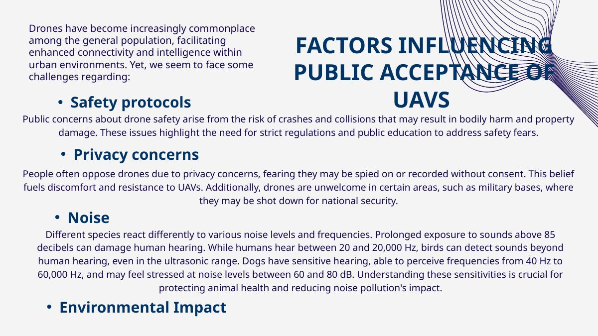
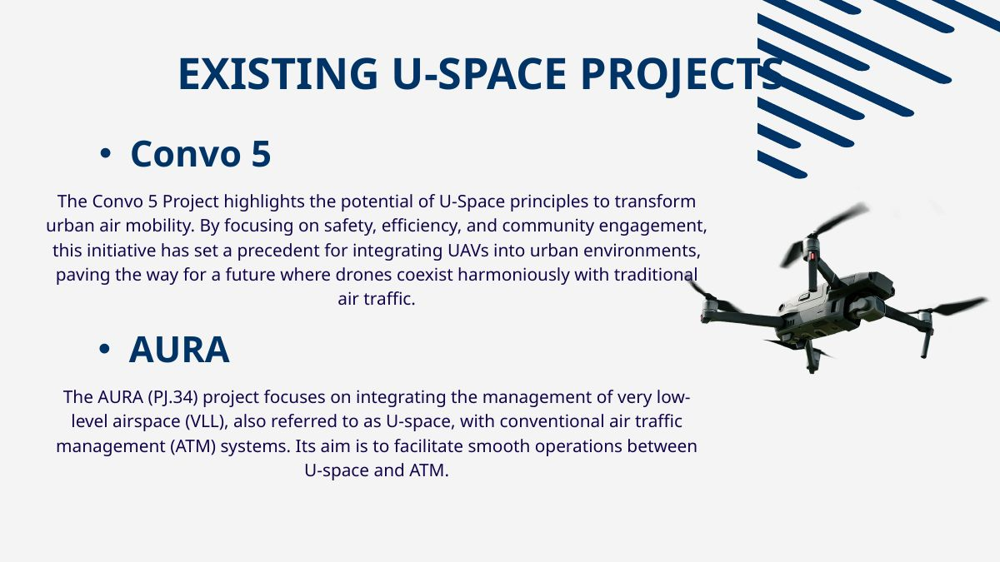
Identification, separation & emergency safety
The safety architecture couples remote identification and location awareness with obstacle detection, route coordination and planned emergency response. GPS/GNSS, LiDAR/radar/camera sensing, dynamic geofences and contingency systems are discussed as design options, not built hardware.
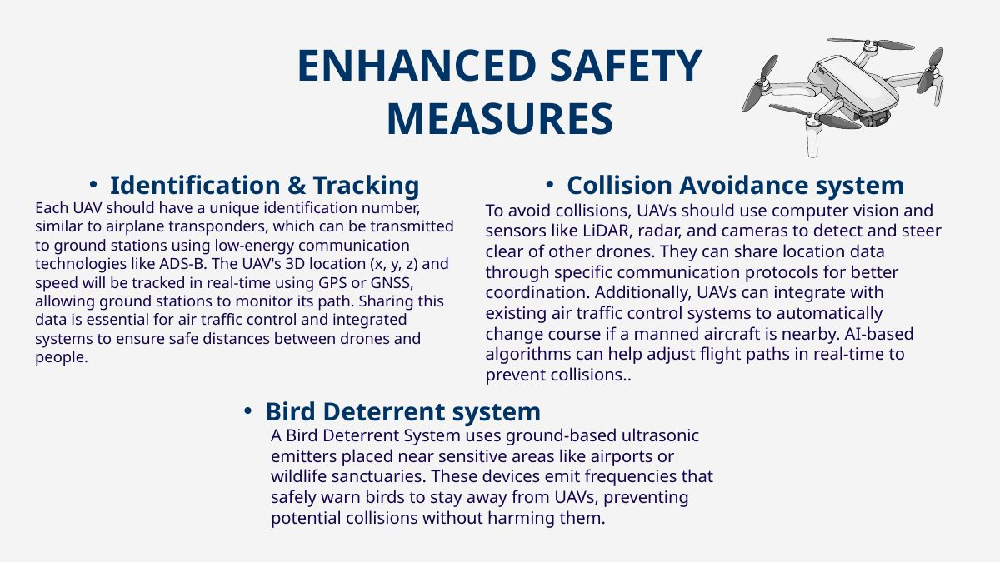
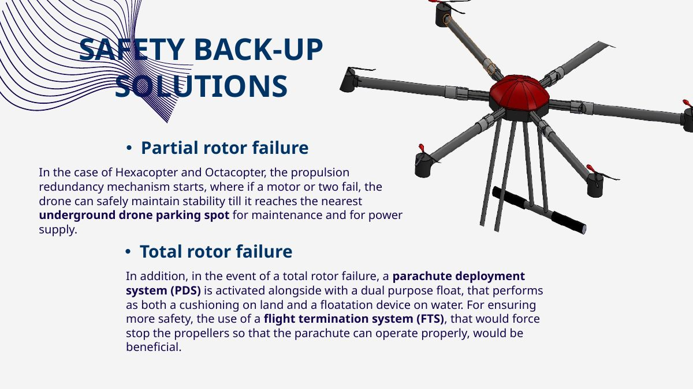
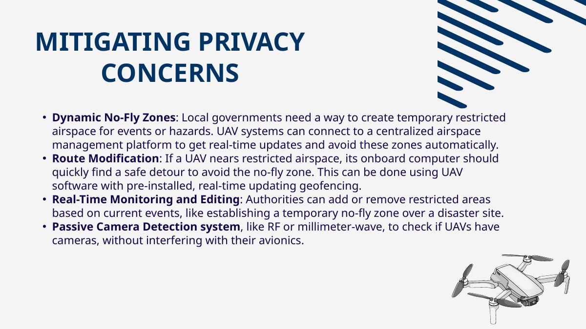
Acoustic design & environmental strategy
The team considers propeller geometry, noise-damping materials and lower-impact structures. The original slide compares conventional, toroidal and Zipline-style propellers; its claims should be read as concept selection criteria because no matched test conditions or measured decibel reductions are included.
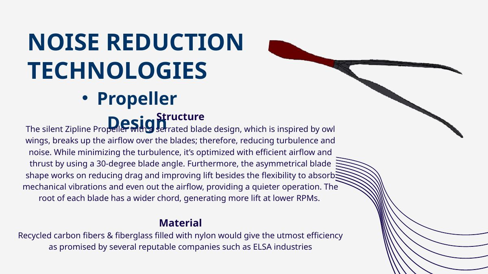
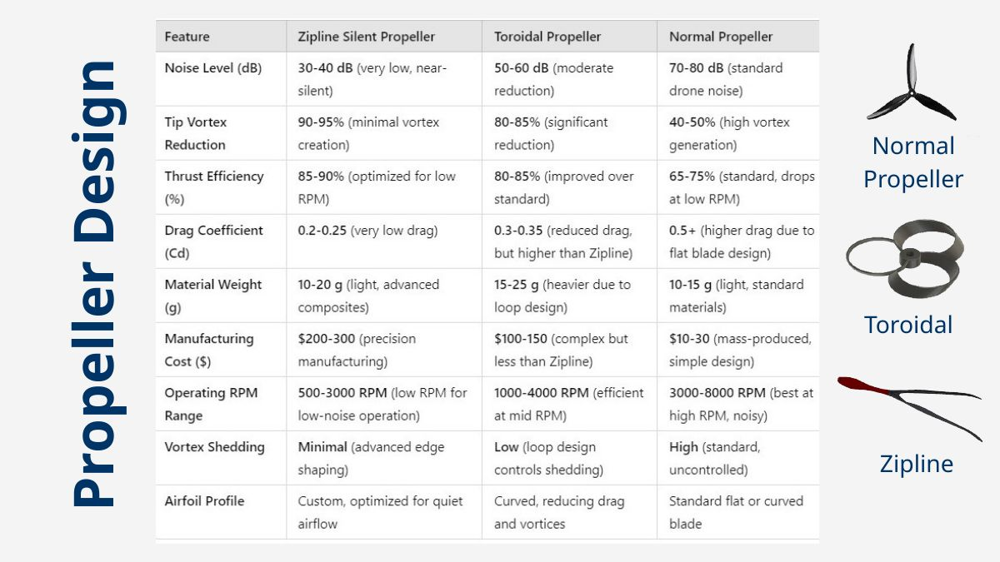
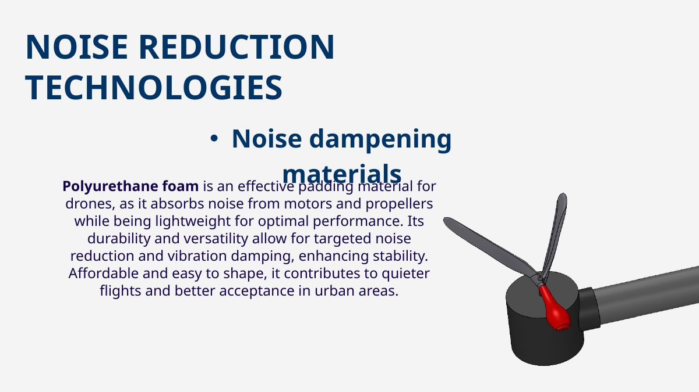
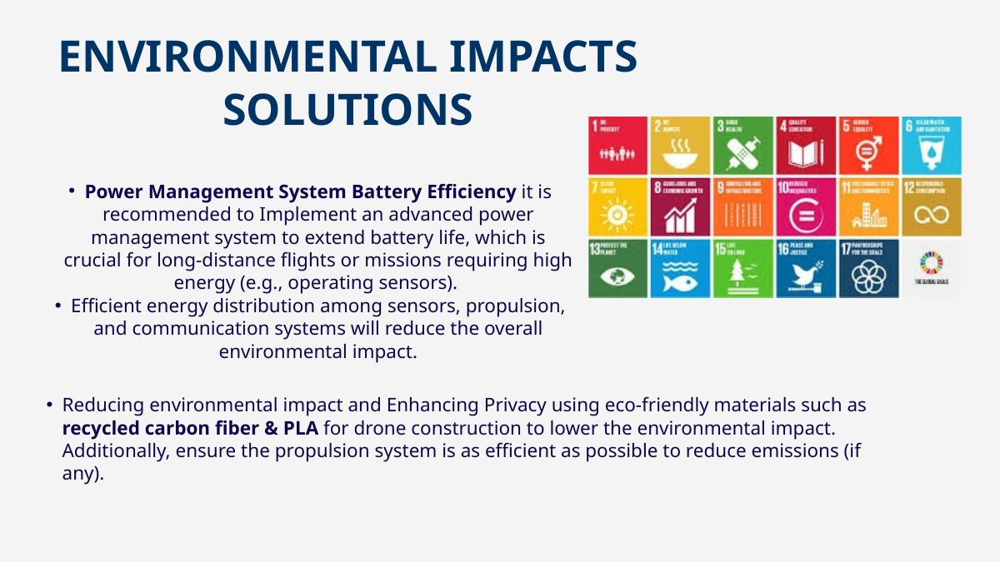
Public engagement & economic feasibility
The presentation contains survey graphics and separate cost-planning tables for hardware, infrastructure, operations and software. The surveys support an exploratory discussion of public attitudes; missing methodology prevents definitive population-level conclusions. The cost tables are conceptual budget inputs, not validated supplier quotations.
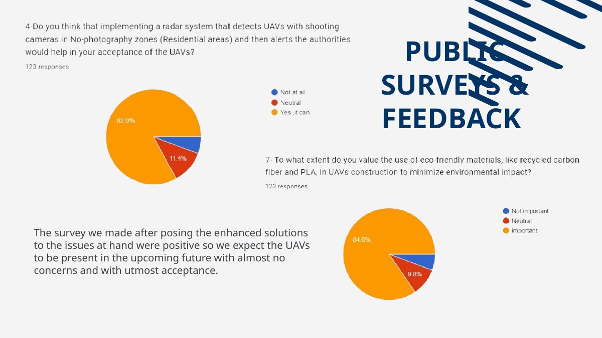
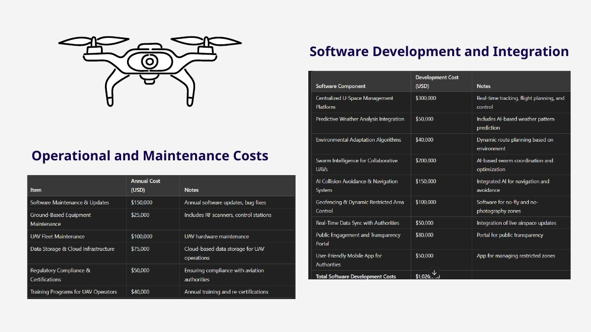
What the presentation establishes—and what it does not
Documented: a structured competition research concept, original comparison graphics, public survey graphics, initial cost tables and design recommendations.
Not demonstrated: manufactured UAV hardware, closed-loop U-space deployment, controlled propeller-acoustic experiments, verified collision-avoidance performance, or a statistically documented survey sample. Technical recommendations should not be read as measured performance results.
Additional original slides
Every slide is preserved in the PDF. The project-specific research slides are annotated in the sections above; the remaining title, team, reference and video-still slides are included below for traceability.
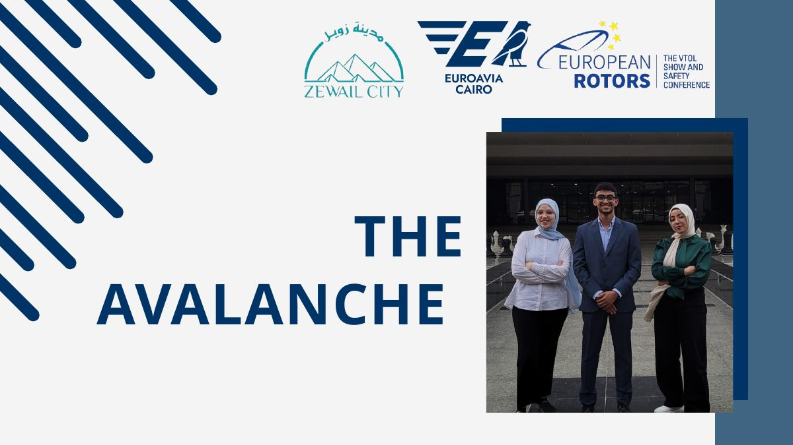
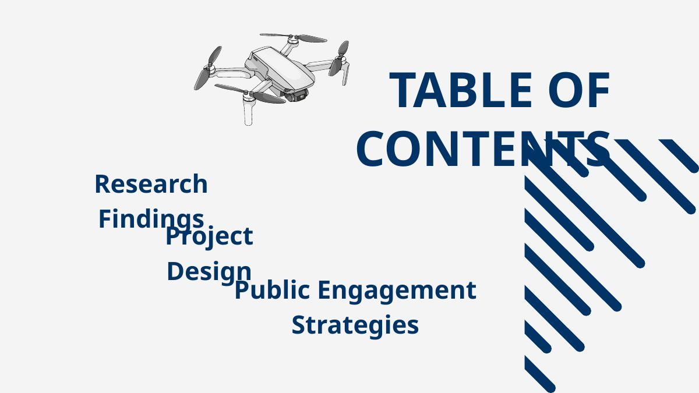
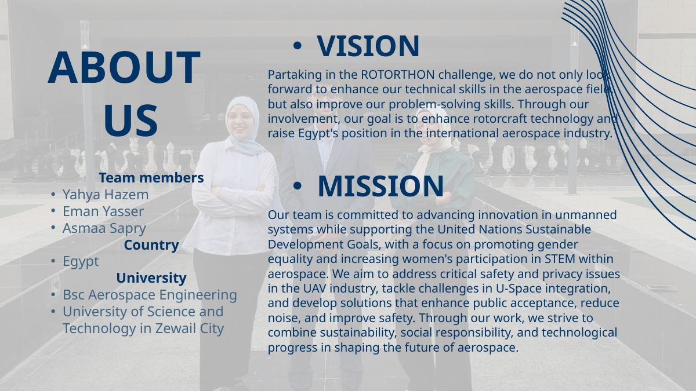
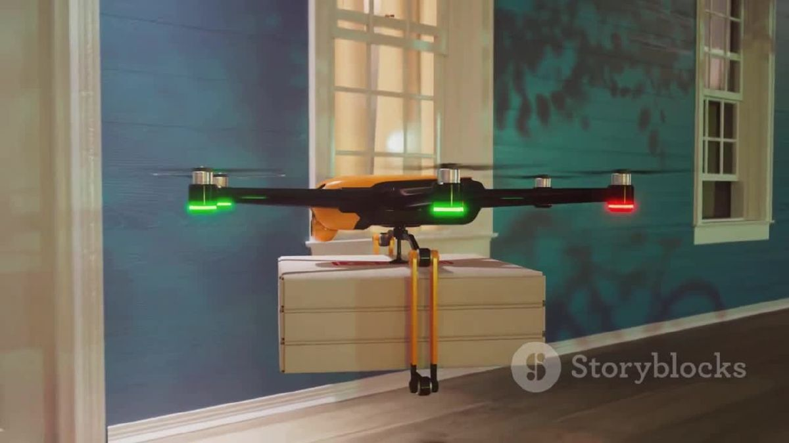
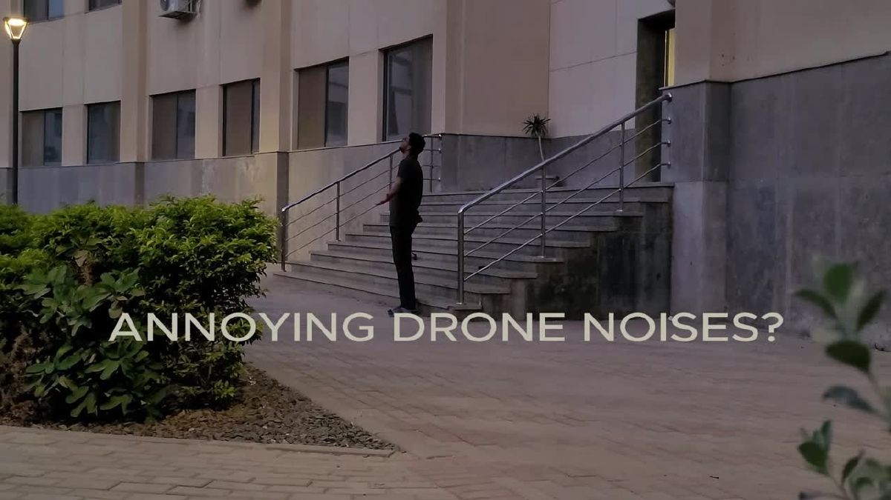
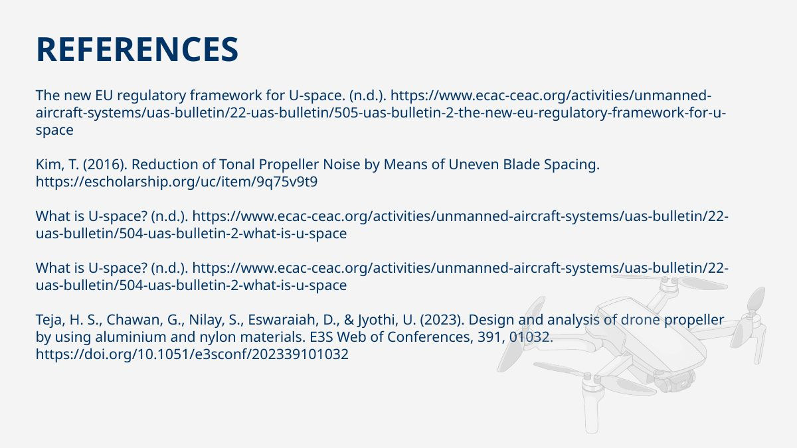
Report and presentation
The original submitted file was a PowerPoint presentation, rather than a separate written report. The report link below is a PDF export of all 19 slides. The accompanying PPTX is a lightweight copy with the two large embedded videos removed; the visual slides and editable presentation content are retained.